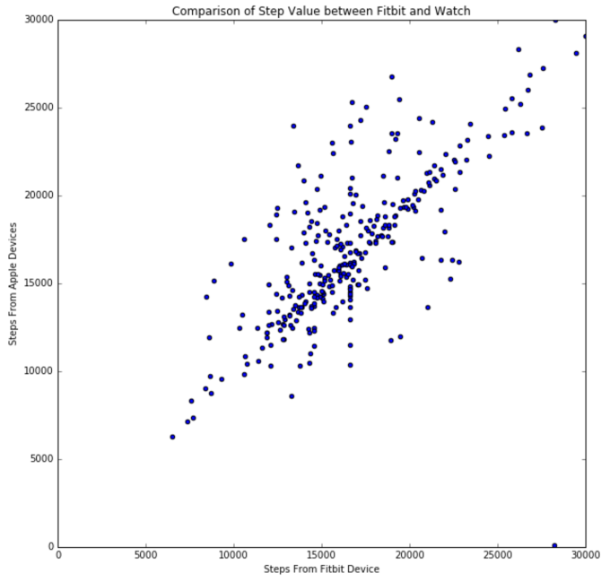
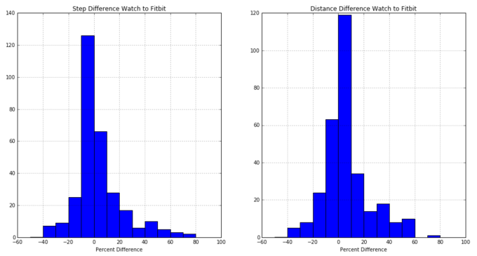
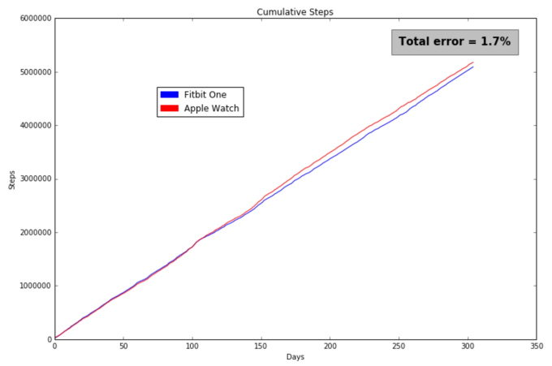
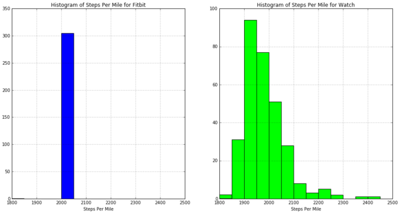
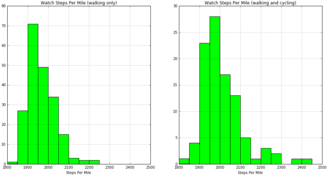

When I picked up an Apple Watch, I had already been carrying a Fitbit for two years. It was a habit I was reluctant to change. I was unsure how well the Apple Watch would work as well as how I would get data off the watch. At launch, there appeared to be no way to get the data without writing your own iPhone app which is not a path I wanted to go down. My solution was to wear both devices, a practice that I continue with today.
Over time, and the release of a new watch operating system, more apps appeared which can access iHealth data. Now that there is a way to get data from both devices, I decided it would be interesting to take a look at how the data compare.
Data Sources
My Fitbit data comes initially from a Fitbit Flex and since November 22, 2015 from a Fitbit One (after the Flex died). For the Apple data, the data prior to June 1, 2015 came from the sensors in the iPhone 6 (which can be used as a step tracker on its own) while the data after that date is from the Apple Watch. Because the iPhone and Watch are such different devices, especially in how they are worn, I have separated these into 2 different data sets and in this analysis I will only look at the Watch data.
Step Analysis
Steps are the base data that all devices record so it seems natural to plot the steps from the devices against each other.

There is a clear linear relationship in the values reported by both devices but the variance is more than I expected. In this format it is very difficult to quantify this difference. A better way of understanding this is to compute a percent difference between the two step values and look at these in a histogram. While we're at it we can also look at the differences in the distance data as well.
 2 This gives us a better feel for the differences. Much of the variation in the steps is below 20% and while the delta occurs on both sides, the tendency is for the Watch to read a higher step count than the Fitbit. We also see that the difference in the steps tend to be smaller than the differences in the distance which we will investigate later.
While this histogram gives me some level of comfort that both devices give acceptable results the one thing this does not show is whether there are accumulated differences over time. This we can see by plotting the cumulative steps over time.

Looking at the data this way gives me comfort that both devices do an equally good job of tracking steps. There are times when I wear my Watch while not wearing my Fitbit (usually while cycling) and I have no trouble believing that the actually difference between the two would be lower than the 1.7% shown here if I could account for that.
Distance Analysis
Now that we have seen how well steps match, let's look at the distance computed by these devices. Since the Fitbit has no way to measure distance, it has to perform a conversion from steps to distance. The Watch and iPhone combination have significantly more sensor data to work with, including a GPS, but I don't know how these are used to determine the distance it logs.
Let's look at the steps-per-mile that result from dividing the steps by the distance in miles generated by both devices.

This gives us insight into how distance is handled by the devices. Whereas the distance produced by the Fitbit has a very simple relationship to the steps, in the case of the Watch the number of steps-per-mile varies significantly.
If the Watch is trying to measure the distance using the GPS I could see 2 sources for the variation in steps-per-mile. The first is just stride differences due to walking speed. A larger possible source of error could be how the Watch determines whether you are walking or doing some other activity. Since I wear the watch cycling I wanted to see if the steps-per-mile variation was different on days I wore the Watch cycling from those where I did not.

As I suspected, the variation of steps-per-mile is much larger on cycling days. If the goal is to get an accurate walking distance from an Apple Watch, it should not be worn while cycling.
Conclusions
Through this exercise I've gained confidence that I could replace my Fitbit with my Watch for step data collection. The path to get data is a solved problem and the step data matches the Fitbit quite well.
I consider the distance differences a toss-up. Getting distance from a the simple computation of multiplying steps by a constant factor is at best an approximation. For walkers, this may be acceptable but for runners this won't work as their walking and running strides could be quite different. If you plan to run, as well as walk, I would expect the Watch to produce more accurate distance results. A Fitbit model with built-in GPS would also be an option.
Source Material
For those interested, this post is provided as a Jupyter Notebook.